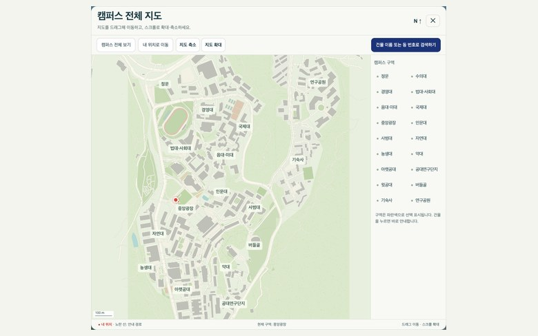
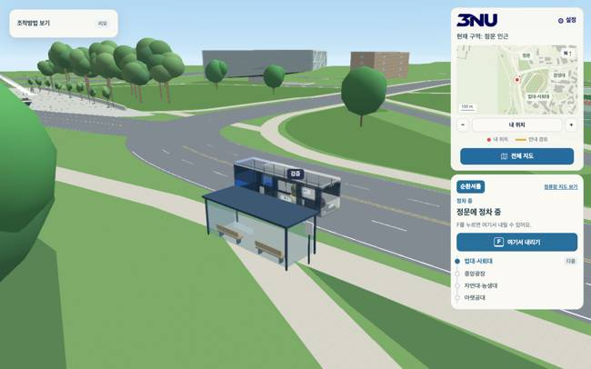
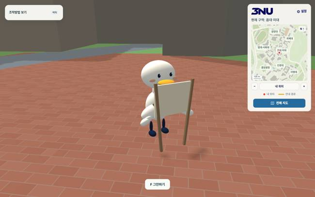
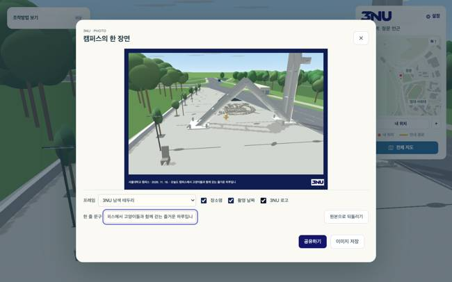
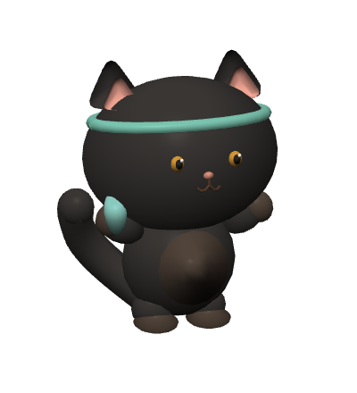

v1.0.5 · 모바일 플레이 경험 개선
2026.11.18- 게임 화면에서 바로 확인하는 단계별 조작 안내를 추가했어요.
- 모바일 터치 조작을 다듬어, 길게 누를 때 글자가 선택되거나 터치가 끊긴 뒤 이동이 계속되는 문제를 막도록 보강했어요.
- PC·모바일 화면에 맞춰 안내 배치를 개선했어요.
- 탐방 가이드를 캠퍼스에서 즐길 수 있는 주요 기능 중심으로 정리했어요.
캠퍼스 로딩 중
3NU 캠퍼스에서 다양한 활동을 즐겨보세요.

건물 이름이나 동 번호로 목적지를 찾고, 캠퍼스 안에서 이어지는 길을 안내받을 수 있습니다.

정류장에서 순환셔틀을 기다렸다가 캠퍼스를 편하게 둘러보세요. 도착한 버스에 자동 탑승하고 다음 정류장 하차를 예약할 수 있습니다.

잔디광장 빈백에서 쉬거나 캠퍼스 곳곳의 시설을 이용하며 여유롭게 탐방할 수 있습니다.

캐릭터와 캠퍼스의 풍경을 사진으로 남겨보세요. 프레임과 문구로 꾸며 저장하거나 공유할 수 있습니다.
길을 걷고, 책을 읽고, 잠시 쉬는 여섯 친구를 찾아보세요.
가방을 메고 캠퍼스 길을 걷는 고양이.
책과 함께 쉬어가는 고양이.
스케치북과 연필을 든 고양이.
악기 케이스를 메고 고개를 까딱이는 고양이.

머리띠와 물병을 챙긴 고양이.
컵과 작은 가방을 든 고양이.
3NU의 첫 공개 버전이에요. 캠퍼스를 걷거나 날며 둘러보고, 지도와 길안내로 목적지를 찾아보세요.
3NU는 서울대학교 학생이 개인적으로 제작한 비영리 캠퍼스 탐방 프로젝트입니다. 서울대학교의 공식 서비스는 아닙니다. 가상 탐방 공간으로 실제 캠퍼스와 차이가 있을 수 있습니다.
원활한 이동과 탐방을 위해 건물·지형·조경·경로 일부를 단순화하거나 재구성했습니다. 실제 방문 시에는 학교 공식 지도와 시설 안내를 확인해 주세요.
건물·도로: © OpenStreetMap contributors (ODbL)
장소 정보: 서울대학교 공식 캠퍼스맵 및 각 기관 안내
지형 참고: Mapzen / Skadi, USGS SRTM
3D 엔진: Babylon.js (Apache-2.0) · 도형 분할: earcut (ISC)
기획·디자인·제작: 3NU · 제작 과정에서 AI 도구 활용
건물 소개 이미지는 게임 안의 구현 모습이며 실제 사진이 아닙니다.
서울대학교 상징과 캐릭터를 참고해 일부 시각 요소를 제작했습니다. 참고한 원본 상징·캐릭터와 외부 자료의 권리는 각 권리자에게 있습니다.
서울대학교 상징 안내 · 참고 캐릭터 소개 · 스누베어 소개
출처·권리 관련 문의나 수정 요청은 게시판의 피드백으로 보내 주세요.